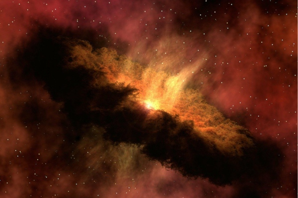

El universoes la totalidad de todas las formas de materia, energía, espacio-tiempo y leyes físicas que las rigen. Sin embargo, el término también se utiliza en sentidos contextuales ligeramente diferentes y alude a conceptos como cosmos, mundo, naturaleza o realidad.1 Su estudio, en las mayores escalas, es el objeto de la cosmología, disciplina basada en la astronomía y la física, en la cual se describen todos los aspectos de este universo con sus fenómenos. Las ciencias físicas modelizan el universo como un sistema cerrado que contiene energía y materia adscritas al espacio-tiempo y que se rige fundamentalmente por principios causales. Basándose en observaciones del universo observable, los físicos intentan describir el continuo espacio-tiempo en el que nos encontramos, junto con toda la materia y energía existentes en él.
Los experimentos sugieren que el universo se ha regido por las mismas leyes físicas, constantes a lo largo de su extensión e historia. Es homogéneo e isotrópico. La fuerza dominante en distancias cósmicas es la gravedad, y la relatividad general es actualmente la teoría más exacta para describirla. Las otras tres fuerzas fundamentales, y las partículas en las que actúan, son descritas por el modelo estándar.
El universo tiene por lo menos tres dimensiones de espacio y una de tiempo, aunque experimentalmente no se pueden descartar dimensiones adicionales. El espacio-tiempo parece estar conectado de forma sencilla, y el espacio tiene una curvatura media muy pequeña o incluso nula, de manera que la geometría euclidiana es, como norma general, exacta en todo el universo.
La teoría actualmente más aceptada sobre la formación del universo, fue teorizada por el canónigo belga Lemaître, a partir de las ecuaciones de Albert Einstein. Lemaitre concluyó (en oposición a lo que pensaba Einstein) que el universo no era estacionario, que el universo tenía un origen. Es el modelo del Big Bang, que describe la expansión del espacio-tiempo a partir de una singularidad espaciotemporal. El universo experimentó un rápido periodo de inflación cósmica que arrasó todas las irregularidades iniciales. A partir de entonces el universo se expandió y se convirtió en estable, más frío y menos denso. Las variaciones menores en la distribución de la masa dieron como resultado la segregación fractal en porciones, que se encuentran en el universo actual como cúmulos de galaxias.
Las observaciones astronómicas indican que el universo tiene una edad de 13 799±21 millones de años (entre 13 778 y 13 820 millones de años con un intervalo de confianza del 68%) y por lo menos 93 000 millones de años luz de extensión.2
Debido a que, según la teoría de la relatividad especial, la materia no puede moverse a una velocidad superior a la velocidad de la luz, puede parecer paradójico que dos objetos del universo puedan haberse separado 93 000 millones de años luz en un tiempo de únicamente 13 000 millones de años; sin embargo, esta separación no entra en conflicto con la teoría de la relatividad general, ya que esta solo afecta al movimiento en el espacio, pero no al espacio mismo, que puede extenderse a un ritmo superior, no limitado por la velocidad de la luz. Por lo tanto, dos galaxias pueden separarse una de la otra más rápidamente que la velocidad de la luz si es el espacio entre ellas el que se dilata.
Observaciones recientes han demostrado que esta expansión se está acelerando, y que la mayor parte de la materia y la energía en el universo son las denominadas materia oscura y energía oscura; la materia ordinaria (bariónica) solo representaría algo más del 5 % del total.3
BIG BANG

Las teorías sobre el Big Bang no describen, en realidad, este hecho en sí, sino la evolución del universo temprano en un rango temporal que abarca desde un tiempo de Planck (aprox. 10−43 segundos) después del Big Bang hasta entre 300 000 y 400 000 años más tarde, cuando ya se empezaban a formar átomos estables y el universo se hizo transparente.8 Después del Big Bang, y esto ya no forma parte de la teoría, el universo sufrió un progresivo enfriamiento y expansión cuyo desarrollo posterior fue determinado por procesos que podemos observar en la física de partículas. Tampoco se sabe a ciencia cierta si el universo seguirá expandiéndose indefinidamente (Big Rip) o bien colapsará debido a la atracción gravitatoria (Big Crunch).
Desde que Georges Lemaître observó por primera vez, en 1927, que un universo en permanente expansión debería remontarse en el tiempo hasta un único punto de origen, los científicos se han basado en su idea de la expansión cósmica. Si bien la comunidad científica una vez estuvo dividida en partidarios de dos teorías diferentes sobre el universo en expansión, la del Big Bang, y la teoría del estado estacionario, defendida por Fred Hoyle, la acumulación de evidencia observacional favorece fuertemente a la primera, que ahora se acepta casi universalmente.
El Misterio del Universo Oscuro
El mayor componente del universo en el que vivimos es un enigma.
Y es que los átomos que componen todo lo conocido, los planetas, las estrellas y a nosotros mismos, constituyen sólo el 5% del mismo.
El resto es lo que los científicos llaman energía oscura (la vasta mayoría) y materia oscura.
Los astrónomos tienen ahora un nuevo y potente instrumento para estudiar la primera, el Instrumento Espectroscópico de la Energía Oscura (DESI, por siglas en inglés).
lista de actividades
Lunes
Martes
Sabado
Domingo
Tv
playa
Fisica
Html
Cine
Tenis
Quimica
Css
Para mayor informacion click aqui
Para mayor informacion